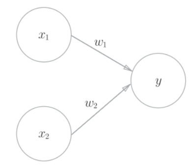
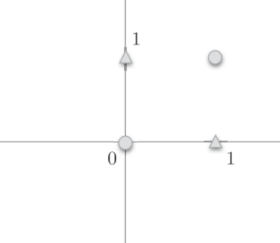
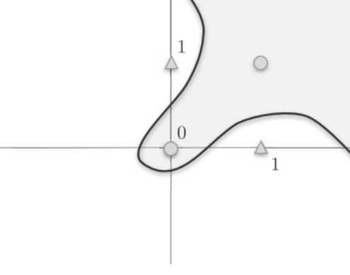
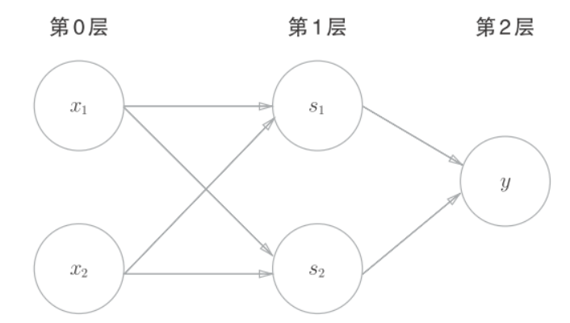

deeplearn_perceptron
感知机(perceptron)
感知机的输入和输出信号只有个1/0两种取值.
是输入信号, 是输出信号, 是权重.○是神经元. 输入信号在神经元内与权重相乘,权重越大, 对应信号的重要性越高.
之后计算总和, 当超过某个阈值时, 输出1, 这时称神经元被激活.

简单逻辑电路
与门(AND gate)
与门是两个输入一个输出的门电路, 在两个输入均为1时, 输出1, 其他时候输出0.
| 0 | 0 | 0 |
| 1 | 0 | 0 |
| 0 | 1 | 0 |
| 1 | 1 | 1 |
当设置时, 可以实现与门. 此外都能满足与门的设定.
与非门(NAND gate)
NAND是Not AND, 就是颠倒了与门的输出
| 0 | 0 | 1 |
| 1 | 0 | 1 |
| 0 | 1 | 1 |
| 1 | 1 | 0 |
可以用这样的组合
或门(OR gate)
或门是只要有一个输入信号是1, 输出就为1
| 0 | 0 | 0 |
| 1 | 0 | 1 |
| 0 | 1 | 1 |
| 1 | 1 | 1 |
python实现与门:
import numpy as np
def AND(x1, x2):
w1, w2, theta = 0.5, 0.5, 0.7
tmp = x1*w1 + x2*w2
if tmp <= theta:
return 0
elif tmp > theta:
return 1
if __name__ == '__main__':
for xs in [(0, 0), (1, 0), (0, 1), (1, 1)]:
y = AND(xs[0], xs[1])
print(str(xs) + " -> " + str(y))
# (0, 0) -> 0
# (1, 0) -> 0
# (0, 1) -> 0
# (1, 1) -> 1
我们将换成, 于是可得:
虽然有符号不同, 但是两个重视表达的内容是完全相同的. 被称为偏置,被称为权重, 感知机计算输入信号和权重的乘积, 然后加上偏置, 如果这个值大于0则输出1, 否则输出0.
python实现:
import numpy as np
def AND(x1, x2):
x = np.array([x1, x2])
w = np.array([0.5, 0.5])
b = -0.7
tmp = np.sum(w*x) + b
if tmp <= 0:
return 0
else:
return 1偏置和权重的作用是不一样的:
- 权重()是控制输入信号重要性的参数
- 偏置()是调整神经元被激活容易程度的参数, 若为-0.1, 则输入信号的加权总和超过0.1, 神经元就会被激活.
异或门(XOR gate)
异或门是仅当一方为1时, 输出为1.
| 0 | 0 | 0 |
| 1 | 0 | 1 |
| 0 | 1 | 1 |
| 1 | 1 | 0 |
| 我们无法通过简单的设置来实现异或门. | ||
| 如下图, 我们无法将○和△使用一条直线分开: | ||
 |
○和△无法用一条直线分开，但是如果将“直线”这个限制条件去掉，就可以实现了.

曲线分割而成的空间称为非线性空间，由直线分割而成的空间称为线性空间.
异或门的实现
感知机可以通过叠加实现异或门
| 0 | 0 | 1 | 0 | 0 |
| 1 | 0 | 1 | 1 | 1 |
| 0 | 1 | 1 | 1 | 1 |
| 1 | 1 | 0 | 1 | 0 |
- 先通过
NAND计算 - 再通过
OR计算 - 最后通过
AND计算
def XOR(x1, x2):
s1 = NAND(x1, x2)
s2 = OR(x1, x2)
y = AND(s1, s2)
return y